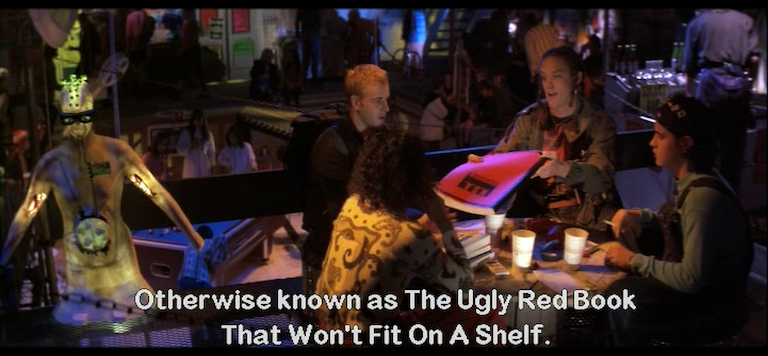
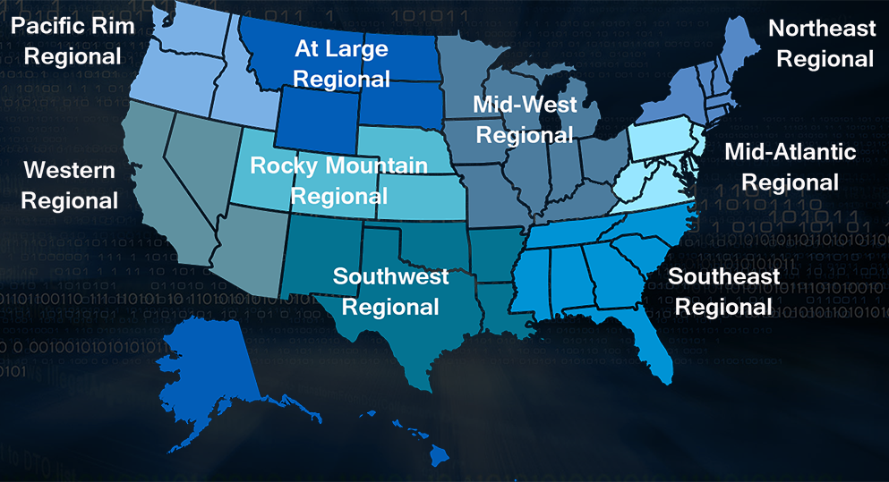

How to Win CCDC
Press 's' to show speaker notes...
Repo
CCDC has both positive and negative effects on those competing on both the red and blue team (student defensive teams) sides. The positives are:
quick priority based problem solving, access and on-the-job training with enterprise grade infrastructure and defensive technologies,
access to industry talent and contacts to hiring firms.
However, there is a lack of realism that, no fault to CCDC staffers, is impossible to virtualize or simulate, which can lead to misconceptions
on both sides if the players are unaware of it. Budgets, vast array of software/technology solutions, large user base and large infrastructure
are just some of the scale issues that CCDC is faced with simulating.
With the addition of cloud infrastructure at Nationals, and the increasing complexity of regional environments including Kubernetes,
Terraform-deployed AWS infrastructure, and SCADA/ICS systems, the competition is closer to reality than ever. But the gap still exists
and should be understood by both sides. IMHO --mubix
The Playing Field
CCDC isn't a CTF. It's a business simulation. You inherit a broken corporate network full of vulnerabilities, and your job is to keep the business running while professionals try to take it apart.
Three things matter: Service uptime, business injects, and not getting owned.
Think of it this way: you're the new IT team at a company that just fired their last admins for cause. Everything is misconfigured, nothing is patched,
and the CEO needs things done yesterday. Oh, and nation-state actors are actively targeting you. Welcome to Tuesday.
How Scoring Works
Service Availability (~50%) - Automated scoring engine polls your servicesBusiness Injects (~50%) - Tasks from the Orange Team / managementRed Team Penalties - Points deducted for breaches
User-level access: minor penalty
Root/admin access: major penalty
PII/PHI exfiltration: massive point loss (highest at Nationals)
The scoring engine checks your services from outside your network at regular intervals. HTTP, HTTPS, DNS, SMTP, POP3, and increasingly
things like Modbus and other OT protocols. If your firewall blocks the scoring engine, that's the same as the service being down. You eat those points.
The balance is intentional. You can't just firewall everything off and call it secure. A perfectly locked-down network that can't serve the business
is a failure. This is the real world lesson CCDC teaches better than almost anything else.
Red Team penalties scale with severity. A user-level compromise is bad. Root access is worse. But stealing PII/PHI data from the company database?
That's the one that destroys your score. At Nationals, data exfiltration is the single highest point loss category. Protect. Your. Data.
The Teams: Who's Who
Not everyone at CCDC is trying to ruin your day. Most of them are there to help. Learn who they are.
↓ Scroll down for each team
One of the most common mistakes new teams make is treating everyone who isn't on their team as an adversary.
Understanding the different team roles will save you time, points, and frustration.
Blue Team (That's You)
Student competitors representing your school
Secure the inherited network
Keep services up and scored
Complete business injects
Hunt threats and respond to incidents
You are the IT department. You own everything that happens on your network, good and bad. The sooner you internalize that, the better you'll perform.
White Team (The Judges)
They observe, evaluate, and judge your performance
They grade your injects and incident response reports
They are the final word on rule disputes
Be professional with them - they're evaluating you as much on conduct as technical skill
White Team judges are watching everything. How you communicate, how you handle stress, how you interact with each other.
Treat every interaction with White Team like a job interview, because functionally, it is.
Many CCDC judges are hiring managers in their day jobs.
Black Team (Infrastructure)
They built and maintain the competition environment
Scoring engine, networking, virtualization - that's all them
You can request help if you completely lose a box, but it costs points
That cost scales on a Fibonacci sequence - 1st request is cheap, 5th is devastating
Black Team interventions use Fibonacci scaling. First and second requests multiply the base cost by 1. Third request multiplies by 2.
Fourth by 3. Fifth by 5. It gets ugly fast. Exhaust every other option before calling Black Team. Rebuild from scratch if you can.
Only call them when the alternative is zero points on that service for the rest of the competition.
Orange Team (The Business)
Simulated executives, employees, and clients
They submit business injects - helpdesk tickets, policy requests, CEO briefings
They evaluate your professionalism and communication
Do not ignore them to fight the Red Team
Here's the thing new teams don't understand: injects are roughly half your score, and unlike Red Team attacks, they're entirely within your control.
You can't predict when Red Team will hit you, but you can absolutely control the quality and timeliness of your inject responses. Teams that ignore
Orange Team to fight Red Team in the terminal are making a mathematically terrible decision.
Orange Team injects range from "add a user to Active Directory" to "draft a disaster recovery policy for the board of directors."
Have templates ready. Have someone dedicated to this. The Injects Lead role exists for a reason.
Red Team (The Adversary)
Professional penetration testers and offensive security researchers
Their job: breach your systems, steal data, disrupt services, maintain access
They simulate advanced persistent threats
I'll talk more about what Red Team actually does in a bit, but the key thing to understand is that Red Team is playing a very specific role in the simulation.
They're not there to be mean. They're simulating the threat landscape that every real organization faces. The better you understand what they actually do,
the better you'll defend against it.
Gold & Green Teams
Gold Team - Event administration, logistics, sponsorships. You probably won't interact with them much.
Green Team - They help Black Team deploy and tear down the competition infrastructure. They ensure every Blue Team starts with an identical environment.
Focus!
At Nationals and at each Regional things will be different, however the thing you'll hear repeated at every event is "Do your injects!". Effective teams identify what tasks create the most amount of points for the least amount of effort.
Obtain Mentors
In Zak Thoreson's blog post he mentions reaching out to industry professionals for help preparing for the competition. DO THIS! Invite the Red Team to come talk about / perform / demo attacks and their defenses.
Everyone has a plan...
Until they get hit in the mouth -- Mike Tyson
Demystifying the Red Team
Let's talk about what Red Team actually does. Because it isn't magic.
I've been on the Red Team side of CCDC for a long time. The single biggest advantage we have isn't secret tools or 0days. It's consistency.
We practice, share ideas, write code, and refine our techniques all 12 months of the year, even though CCDC season is only February through April.
Many Blue Teams start prepping a few weeks before qualifiers. That gap in preparation time is our real edge, not some mystical hacking ability.
To be fair, I don't want to discount the enormous effort it takes to work your way through university and try to add CCDC on top of it.
You're juggling classes, jobs, and life. But the teams that find a way to practice consistently throughout the year are the ones that close the gap.
Red Team Reality Check
What Red Team does is not magic:
We run the same tools you can download and learn
We exploit the same misconfigurations you can find and fix
We automate heavily - our scripts change passwords, plant backdoors, and exfiltrate data faster than any human types
We know operating systems deeply because we break them all year long
We talk, share notes, and build on each other's work constantly
Here's the honest truth: most of what Red Team does in the first 15 minutes of a competition is automated. We have scripts that scan for default
credentials, deploy persistence mechanisms, and establish command and control channels. It's not a person sitting there manually hacking each of your
8 teams simultaneously. It's automation hitting all of you at once, and then humans follow up on whatever worked.
If you change default passwords before our automation runs, half our playbook is dead on arrival.
Common Misconceptions
You use 0days! - Not usually
You have a head start! - Nope
You have advanced tools! ...sure, if you call RDP advanced
You're doing something we can't understand! - Everything we do, you can learn to detect and prevent
First, 0days are worth money. Very few Red Teamers are going to drop 0days at a competition for free. Second, real world companies have to figure out how to deal with 0days.
Most of the regions give the Red Teams not only the exact same start time, but much less information about the network they are going up against. You have the biggest advantage here.
The Red Team's real advantage is preparation time and consistency. We work on this year round. To make tools that can withstand Blue Teams staring straight at them it takes months of development.
AI-assisted exploitation tools are increasingly common on Red Teams. Automated agents can parse configurations, find vulnerabilities, and generate payloads in milliseconds.
The counter? Good fundamentals. Change defaults, filter egress, monitor logs. The basics still beat the fancy stuff.
What Red Team Actually Targets (1/2)
In order of what we try first:
Default and weak credentials - always, every time, first thingUnnecessary services - if it's running and you don't need it, we'll use itEgress to our C2 servers - reverse shells, DNS tunnels, HTTP callbacksYour automation infrastructure - if we own your Ansible server, we own everything
What Red Team Actually Targets (2/2)
Lateral movement via AD - Kerberoasting, Pass-the-Hash, GPO abuseWeb application backdoors - webshells dropped in your scored web appsData exfiltration - PII/PHI from databases for maximum point damage
Notice how the list starts with the simplest stuff. Default credentials aren't glamorous but they work almost every single competition.
We don't need to break in if you left the door unlocked. Every item on this list has a straightforward defensive counter. That's the point.
The First 15 Minutes
The competition is often won or lost here. Red Team hits you with automation immediately. Your counter: have your own automation ready.
Red Teams enter the environment armed with pre-compiled reconnaissance data, default credential lists, and custom tooling designed to establish
persistence before you can even log into your firewalls. If you're manually changing passwords one at a time, you've already lost the race.
The Checklist
Three things, in this order, as fast as possible:
Mass credential rotation - every account, every service, every database, all at onceEgress filtering - default deny outbound, whitelist only what's scoredKill unnecessary services - if it's not scored, turn it off
Phase 1: Credential rotation. Have scripts ready that change every password on every system simultaneously. User accounts, service accounts,
database admin passwords, application passwords. All of them. If you're doing this by hand, you're too slow. Red Team automation is already
using those defaults before you finish your first password change.
Phase 2: Egress filtering. This is the one that separates good teams from great ones. Inexperienced teams focus entirely on blocking inbound traffic.
But Red Team payloads initiate outbound connections - reverse shells, C2 callbacks, DNS tunnels. Switch your entire network to default-deny egress
and only whitelist the specific protocols and ports needed for scored services. This single action neutralizes the majority of Red Team persistence.
Phase 3: Attack surface reduction. Cross-reference every running service against the scoring engine topology. Anything not explicitly scored gets
terminated and uninstalled. Every unnecessary service, open port, and running application is an entry point you have to defend. Don't.
Practice and Preparation

Prep Notes
Create a play-book
Automate everything you can
Have a copy for every member, even if it's not their focus area
Have a list of shortened / easily typed URLs for everything
Your playbook should include hardening scripts for every OS you might encounter, inject response templates, incident response report templates,
and checklists for the first 15 minutes. Practice running your automation in a lab environment. Time yourselves. Shave seconds off.
What to Bring (on paper)
Password sheets of easily typed, long, passwords
Cheat sheets of useful commands
List of known / standard users per OS
List of known / standard services per OS
Inject response templates ready to customize
Incident response report templates (NIST 800-61 format)
Pre-built templates for injects and IR reports are a game changer. When Red Team breaches a service and you need to file an incident response report,
the team that has a template ready and just fills in the specifics will recover points. The team that stares at a blank document will not.
Consistency is King
Red Teamers practice 12 months a year. CCDC season is only Feb through April.
Build a lab and break it. Rebuild it. Break it again.
Practice your automation until it's muscle memory
Run mock competitions with your team
Study Red Team tools and techniques - learn what you're defending against
Cross-train so everyone can cover at least two roles
I get it. University is hard. You're balancing classes, maybe a job, and trying to have a life. I don't want to discount the immense effort it takes
to add CCDC on top of all that. But the teams that find even a few hours a week throughout the year to practice together are the ones that make it
to Nationals. You don't need to match Red Team's schedule. You just need to be consistent enough that your fundamentals are automatic when the pressure hits.
Know Your Team
Roles and Chain of Command
Team Captain / Incident Commander
Injects Lead / Business Liaison
Networks and Firewall Lead
Linux Systems Administrator
Windows and Active Directory Administrator
Services and Web Administrator
Threat Hunter / Incident Responder
Automation and Deployment Engineer
Modern CCDC requires an 8-person roster with strict role specialization. The "hero complex" where one or two skilled people try to do everything
is the single most common failure mode. Championship teams delegate aggressively and cross-train constantly.
Team Captain
Make sure everyone is focused on the most important tasks
Coordinates interdisciplinary requirements
Focuses on maximum completion of injects
Answers to CEO
Insures that nothing distracts other team members
Monitors the scoring dashboard
Becomes Incident Commander when breaches occur
As the team captain your job is to keep the "business" running and let your team members focus on the technical pieces. You receive injects, check on
their status, and turn them in. You answer Orange and CEO requests. Basically you are the funnel that keeps all outside noise from touching your team.
In a mature team, the Captain rarely touches a terminal. When a critical breach occurs, you shift to Incident Commander mode: halt non-essential tasks,
coordinate the threat hunt, and ensure isolation protocols don't kill scored services.
Injects Lead / Business Liaison
Manages the Orange Team interface
Translates technical work into professional business documents
Owns inject deadlines - late submissions get zero points regardless of quality
Has pre-compiled templates for policies, memos, and reports
Works in parallel with the technical team, not in series
This role is statistically the differentiator between a podium finish and a mid-tier placement. Injects account for roughly half the total score
and unlike Red Team attacks, they're entirely within your control. Have templates for disaster recovery plans, acceptable use policies, risk assessments,
and executive memos ready before competition day. Partial credit on an inject is always better than nothing. Turn in something for every single one.
Firewall Admin
RAISE SHIELD Mr Sulu!!
Egress and Ingress filter quickly
Default deny outbound, whitelist scored services
You are the choke point - if Red Team can't call home, their persistence dies
Help your team identify malicious traffic
Your perimeter firewall is the single most impactful defensive asset in the competition. A properly configured egress filter neutralizes the majority
of Red Team persistence mechanisms. Most Red Team payloads need to call home to a C2 server. If they can't reach it, the payload is dead.
Modern competitions use Palo Alto Networks, pfSense, or iptables depending on the region. Know all of them.
CAPRICA (ACL Generator) is AWESOME: https://github.com/google/capirca
Critical: the scoring engine checks from OUTSIDE your network. If your firewall blocks the scoring engine's traffic, you lose those points.
Always verify your rules against the scoring engine IPs before going to default deny.
Linux Admin
Move or disable SSH if it isn't scored
Automate hardening with Ansible playbooks
sysctl hardening: disable ICMP redirects, restrict kernel pointers
SELinux/AppArmor - enforce it, don't disable it
Fail2Ban on anything accepting auth
Know systemd - that's where persistence hides
Red Team persistence on Linux commonly lives in cron jobs, systemd unit files, .bashrc modifications, authorized_keys additions, and SUID binaries.
Know where to look. Have scripts that baseline these and alert on changes. The command find / -perm -4000 -type f finds SUID binaries.
systemctl list-unit-files --state=enabled shows you what's set to start on boot. Audit these immediately.
Windows Admin
PowerShell is your best friend and worst enemy
Group Policy Objects are how you enforce security at scale
Kerberos attacks (Kerberoasting, AS-REP Roasting) are Red Team favorites
Sysmon + Windows Event Forwarding = visibility
Windows Defender is actually good now - make sure it's running and updated
Know how to find and kill persistence in the registry, scheduled tasks, and WMI
Active Directory is the crown jewel Red Team wants. If they get Domain Admin, the competition is effectively over for your Windows infrastructure.
Kerberoasting is trivially easy and almost always works against service accounts with weak passwords. Set long, complex passwords on every service account.
Disable NTLM where possible. Monitor for unusual Kerberos ticket requests.
Sysinternals tools are invaluable. Autoruns shows you everything set to run at startup. Process Explorer shows running process trees.
TCPView shows active network connections. Learn these tools cold.
Services and Web Admin
Maintain uptime for all scoring engine services
Audit web applications for backdoors immediately - check for recently modified PHP/ASP files
Secure databases: rotate creds, restrict network access, back up scored data
ModSecurity or similar WAF in front of web apps
Docker/Kubernetes: know container escapes and how to prevent them
Web applications are a favorite Red Team target because they're publicly accessible and often full of vulnerabilities. The first thing you should do
is check for webshells - files recently added or modified in web directories. Look for base64 encoded strings, eval() calls, and files that don't
match the application's normal codebase.
For databases, the PII/PHI data stored there is the highest-value target at Nationals. Back up that data, restrict database network access to only
the application servers that need it, and rotate every database credential immediately. If Red Team exfiltrates your customer database, that's the
single biggest point loss in the competition.
Modern competitions increasingly include containers. A container escape into the host, followed by a pivot to the database, is a real attack path.
Know your container runtime security.
Threat Hunter / Incident Responder
Assume you're already breached - hunt from minute one
Centralize logs: Splunk, Graylog, or ELK
Monitor for anomalous egress: odd DNS queries, unexpected outbound connections
Baseline normal behavior, alert on deviations
File integrity monitoring on critical paths
IR reports using NIST 800-61 framework
Passive defense - waiting for something to turn red on the scoring dashboard - is a guaranteed losing strategy. The best teams operate under the
assumption that Red Team is already inside, because most of the time, they are.
Effective threat hunting means centralizing logs from every system into one place and looking for patterns. Massive outbound DNS queries from a
domain controller? That's probably a C2 channel. New scheduled task on a system nobody touched? That's persistence. Recently modified PHP files
in your web root? Webshell.
The huge thing teams miss: incident response reports can recover the points you lost from a breach. A well-written IR report with specific indicators
of compromise, timeline of the attack, and remediation steps taken can sometimes recover all the penalty points. Have templates ready.
The Threat Hunter finds the evidence, the Injects Lead formats the report.
Automation Engineer
Deploy hardening playbooks in the first minutes - Ansible, PowerShell DSC
Version control your automation - Git
Secure your automation infrastructure - if Red Team owns your Ansible server, they own everythingUse least-privilege service accounts for automation
Test your playbooks before competition day
In the modern competition, manual configuration cannot keep pace with Red Team automation. You need config management deploying security baselines
across all your systems simultaneously.
But here's the risk that catches teams: Red Team actively hunts for your automation infrastructure. If they compromise your Ansible control node
or your PowerShell deployment server, they have the keys to your entire kingdom. They will use YOUR playbooks to deploy THEIR malware, alter firewall
rules, or lock you out of your own systems. Secure your automation servers with the strongest access controls you have, use key-based auth only,
and monitor them obsessively.
Physical Space
Go into blackout - no phones, no outside communication
Violation means disqualification
Organize your workspace - monitor layout matters under stress
Printed playbooks, cheat sheets, and password lists
Whiteboard for service status and inject deadlines
The communications blackout is absolute. No texting your mentor, no checking Discord, no outside help of any kind. Your coach cannot enter your
competition space or advise you during the event. Violations result in penalties or disqualification.
Physical organization is underrated. When you're 6 hours into a competition and running on caffeine and adrenaline, being able to glance at a
whiteboard to see service status and inject deadlines will save you from dropping critical balls.
Injects
Injects are IMPORTANT. Do not fail to turn in SOMETHING for them. Partial credit is way better than nothing.
They range from "add a user to AD" to "present a disaster recovery plan to the board"
Late submissions earn zero points regardless of quality
Professional formatting matters - use complete sentences, proper tone
Injects are evaluated on technical accuracy, completeness, and professional formatting. The Orange Team judges want to see executive-quality
communication, not a brain dump of technical jargon. If the inject asks for a security policy, write it like you'd present it to a CEO, not
like a Reddit post.
Have templates pre-built for common inject types: acceptable use policies, disaster recovery plans, risk assessments, incident reports,
executive memos, and network diagrams. Customize them for the competition scenario and submit on time.
Know Your Network
Map everything in the first 10 minutes - what's running, what's scored, what shouldn't be there
Cross-reference against the team packet topology
Document IP addresses, services, and credentials as you discover/change them
Segment where possible - the flat network is Red Team's playground
The team packet gives you a network topology. Verify it immediately. Run nmap against your own network and compare what's actually running versus
what should be. Anything unexpected is either a misconfiguration you need to fix or something Red Team planted before the clock started (in some formats).
Document everything on your whiteboard. This is your ground truth for the rest of the competition.
Know Your Defenses
Layer your defenses - no single control stops everything
Perimeter: firewall egress filteringHost: endpoint protection, sysctl hardening, GPOsApplication: WAF, input validation, secure configsData: encryption, access controls, backups of PII/PHIMonitoring: centralized logging, alerting on anomalies
Defense in depth isn't just a buzzword for CCDC. When Red Team bypasses your firewall (and they will eventually), your host-level controls need to
catch them. When they escalate privileges on a host, your network segmentation should limit lateral movement. When they reach your database, encryption
and access controls should slow the data exfiltration. Every layer they have to break through costs them time, and time is the one resource that's
truly limited in a competition.
Know Your Enemy
Study Red Team writeups and debrief videos
Learn the tools: Metasploit, Cobalt Strike, Impacket, Sliver, Mythic
Understand common attack chains, not just individual techniques
MITRE ATT&CK framework maps techniques to detections
The best defenders have offensive skills
You don't need to become a penetration tester, but understanding how attacks chain together will make you a dramatically better defender.
A Red Teamer doesn't just "hack a box." They scan for open services, find a default credential, establish a foothold, escalate privileges,
move laterally to a higher-value target, and exfiltrate data. Each step in that chain is a detection and prevention opportunity.
Read Red Team competition writeups. Watch the debrief videos. The more you understand about how the other side operates, the better your defenses will be.
Cloud and Modern Infrastructure
Some regions (especially Northeast) now deploy entirely on cloud infrastructure. Be ready for:
AWS / Azure / GCP fundamentals
Terraform and Infrastructure as Code
Kubernetes cluster defense
IAM and identity-based security
Cloud-native logging (CloudTrail, CloudWatch)
The Northeast region has pioneered cloud-native competition environments, deploying infrastructure dynamically on AWS using Terraform and Ansible.
Competitors face Kubernetes clusters secured by Falco, identity management via Teleport, and Palo Alto Networks firewalls. Other regions may focus
more on legacy on-premise environments or include OT/SCADA systems. The variance between regions is extreme, so teams with national ambitions
need to be comfortable with both legacy and cloud infrastructure.
The key cloud security fundamentals: least-privilege IAM policies, no long-lived access keys, enable CloudTrail logging everywhere, and understand
that cloud misconfigurations are the new default credentials.
Regional Specific Notes

↓ Scroll down for regions
Pacific Rim Region
Washington, Idaho, Oregon
Single virtual qualifier in early February
Western Region
Arizona, California, Nevada
Hosted primarily in Southern California
Rocky Mountain Region
Colorado, Kansas, Nebraska, Utah
Denver-based finals, virtual qualifier narrowing the field to eight teams
At-Large Region
Variance region for geographically displaced or unaffiliated institutions
Single virtual qualifier in late February
North-East Region
New England states and New York
Pioneering cloud-native environments (AWS, Kubernetes, Terraform)
Virtual qualifier narrowing 24 teams to a 9-team regional final
Mid-Atlantic Region
Delaware, DC, Maryland, New Jersey, North Carolina, Pennsylvania, Virginia, West Virginia
Scores are ordinal (1st in category get 1 point, 8th, 8)
Team Captains that go into CEO meetings with statistics like # of services online, # of injects completed, usually have better meetings
South-East Region
Alabama, Florida, Georgia, Mississippi, South Carolina, Tennessee
Single virtual qualifier in early February
South-West Region
Arkansas, Louisiana, New Mexico, Oklahoma, Texas
Single virtual qualifier in early February
Mid-West Region
Illinois, Indiana, Iowa, Kentucky, Michigan, Minnesota, Missouri, Ohio, Wisconsin
Most complex qualification: state-by-state qualifiers, then a regional wildcard round
The gauntlet ensures only the most battle-tested teams emerge
The Wildcard
Second-place teams from all nine regions compete in a sudden-death Wildcard event. The winner gets the 10th and final slot at Nationals.
The Wildcard is one of the most intense events in CCDC. Nine second-place teams, one shot, winner take all. If you come in second at your regional,
your season isn't over. Prepare for Wildcard like it's a completely separate competition.
The Midwest region has its own internal wildcard system due to its massive participant volume. State qualifier champions advance to the regional,
while second and third place teams battle in a Midwest-specific wildcard for the remaining regional slots.
Red Team Debriefs
Watch these. Seriously. Understanding how Red Team operates is the single best thing you can do to improve your defense.
These debriefs explain exactly what worked, what didn't, and why.
Questions?
Special thanks to Devon, Joseph, Marco, Aaron, Raymond, and Brian for the 1 AM jam session to get these slides together. Go social media.
Alex Herrick for GPOs and other suggestions.
Craig Balding for the beautiful 'iptstate' command.
And to every Blue Team that's ever competed - you're building skills that matter far beyond the competition.